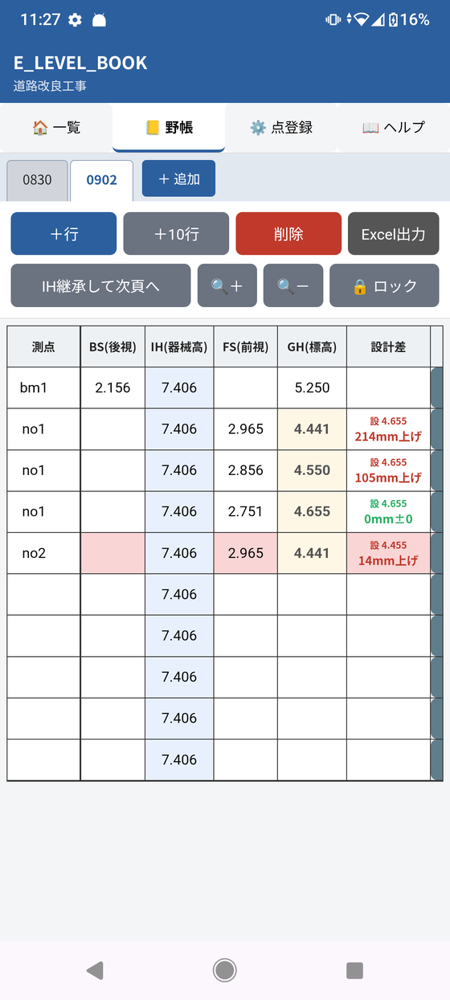
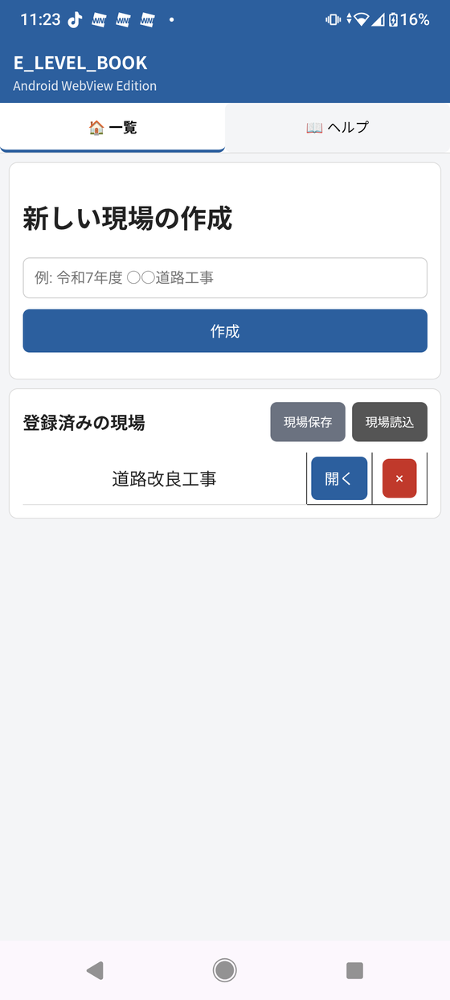
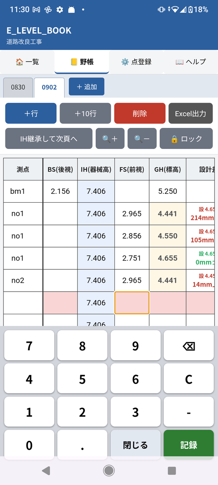
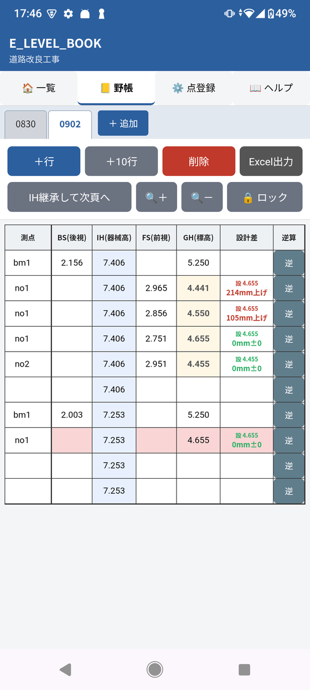
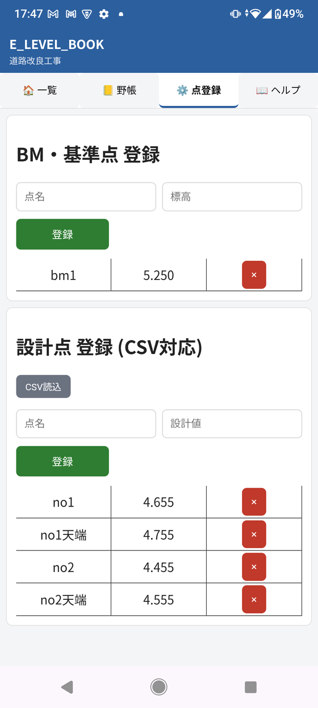

電子野帳・レベル計算アプリ
E LEVEL BOOK
水準測量のレベル計算を、その場で。
建設・土木現場の水準測量、レベル計算、丁張りの準備に。紙の野帳と電卓で行っていた器械高（IH）・地盤高（GH）・設計高との差の計算を、スマートフォン・タブレットひとつで完結させます。

動画で見る
BS・FSを入れると、IH・GHと設計差が出る
実機で操作している画面の動画です（約1分）。BS・FSの入力から、器械高・地盤高・設計との差の表示、「逆」ボタンでのFSの逆算までをご覧いただけます。
動画の数値・現場名は練習用のダミーです。
Before / After
紙の野帳＋電卓の作業を、ひとつにまとめる
E LEVEL BOOKは、何でもできる測量システムではありません。「紙の野帳に記録し、電卓で計算し、書き戻す」という作業のうち、特に計算と転記の手間・ミスを減らすことに絞って作られています。
紙の野帳＋電卓の場合
- 紙の野帳に観測値（BS・FS）を記録
- 電卓で器械高・地盤高を計算
- 設計値と見比べて差を確認
- 計算結果を野帳へ書き戻す
- 必要に応じてPC・Excelへ転記
E LEVEL BOOKの場合
- BS・FSを入力する
- IH・GHを自動計算
- 設計高との差をその場で確認
- 必要に応じてExcel出力
こんな方に
水準測量・レベル計算をしている方へ
- 紙の野帳と電卓でレベル計算をしている
- 水準測量の計算をスマートフォンで行いたい
- 丁張りの準備で高さ計算を行うことが多い
- 器械高・地盤高の計算を簡単にしたい
- 設計高との差をその場で確認したい
- 現場での計算や転記作業を減らしたい
- シンプルな電子野帳を使いたい
できること
実際の画面で見る、E LEVEL BOOK
ここに掲載しているのは、すべて実機でE LEVEL BOOKを操作した画面です。
01 — 現場管理
現場ごとにデータを管理
現場を作成し、登録済みの現場から選んで開きます。現場ごとにデータが分かれているので、複数の現場を並行して記録していても迷いません。

02 — 自動計算・設計差
BS・FSを入力するだけでIH・GH・設計差まで自動計算
BS（後視）・FS（前視）を入力すると、器械高（IH）・地盤高（GH）をその場で自動計算します。設計値を登録しておけば、設計高との差もあわせて色分け表示され、現場での検算の手間を減らします。小数計算の誤差が出にくいよう、内部の計算はミリメートル単位の整数で行っています。
03 — 入力のしやすさ
専用の数値キーパッドで、現場でもすぐ入力
測量用途に合わせた専用の数値キーパッドで、セルをタップしてそのまま数値を記録できます。行の追加・削除、器械高を継承して次頁へ進む操作にも対応しています。

04 — 逆算
設計高からFSを逆算
野帳の各行にある「逆」ボタンをタップすると、現在の器械高（IH）から、設計高に合わせるために必要なFS（前視）をその場で逆算します。丁張りの準備など、目標の高さに合わせたい場面での検算に使えます。

05 — 点登録・CSV一括登録
BM・既知点の登録と、CSVからの設計点一括登録
点登録画面で、BM・基準点や既知点を登録できます。設計点が多い現場でも、「CSV読込」ボタンからCSVファイルを取り込めば、設計値をまとめて登録可能です。1点ずつ手入力する手間を減らせます。

06 — Excel出力
観測データをExcel形式で出力
野帳画面右上の「Excel出力」ボタンをタップすると、そのページの観測データをExcel形式で保存できます。現場での記録をそのまま資料や報告書の作成に使えます。ほかにも、拡大縮小表示・画面ロック・オフライン利用・データの端末内保存に対応しています。
まずは2週間無料
インストールから2週間、すべての機能を無料でお試しいただけます。現場で実際に使ってから、継続利用するか判断できます。
インストールから2週間は、すべての機能を無料でお試しいただけます。無料期間終了後も、記録済みデータの閲覧・出力は引き続き無料でご利用いただけますが、新しい現場の作成や測点の入力など「記録する」機能には、月額または年額のサブスクリプションへの登録が必要になります。
よくある質問
E LEVEL BOOK についてよくある質問
E LEVEL BOOK はどんなアプリですか？
紙の測量野帳と電卓で行っていた器高式のレベル計算を、スマートフォンで行う Android の電子野帳アプリです。BS・FS を入れると器械高（IH）と地盤高（GH）を自動計算し、設計高との差（上げ・下げ）をミリ単位で色分けして表示します。
料金はいくらですか？
インストールから2週間は、全機能を無料でお使いいただけます。その後も新しく記録を続けるには、アプリ内から定期購入（月額500円／年額5,000円）をお申し込みください（アプリ内では「プレミアムプラン」と表示されます）。
無料期間が終わると、自動で課金されますか？
自動で課金されることはありません。続けてお使いいただく場合だけ、アプリ内から月額500円または年額5,000円の定期購入をお選びください。定期購入は、解約するまで自動で更新されます（月額は1か月ごと、年額は1年ごと）。
解約はどうすればよいですか？
Google Play アプリの［お支払いと定期購入］→［定期購入］から、いつでも解約できます（ブラウザでは play.google.com/store/account/subscriptions からも開けます）。アプリを削除しても、定期購入は解約されません。
無料期間が終わった後、定期購入をしないと何ができなくなりますか？
インストールから2週間は、すべての機能を無料でお使いいただけます。無料期間が終わった後は、新しい現場やページの作成、点・設計高の登録、CSV読み込み、野帳への入力に定期購入が必要です。定期購入をしていない期間も、保存済みの現場・野帳の閲覧、Excel出力、データの保存（バックアップ）は無料でご利用いただけます。端末内のデータが消えることはありません。
iPhone で使えますか？
いまは Android 版のみです。iPhone では使えません。
電波の届かない現場でも使えますか？
使えます。オフラインで動作し、データは端末内に保存されます。定期購入の申し込みには、インターネット接続が必要です。
器高式と昇降式のどちらに対応していますか？
器高式に対応しています。昇降式には対応していません。
閉合差の計算はできますか？
できません。閉合差の計算・調整の機能はありません。BM の高さが決まった後の、丁張りなどの工事測量で使うことを想定したアプリです。
設計高をまとめて登録できますか？
CSV ファイルから設計点を一括登録できます。1列目に測点名、2列目に設計高を入れてください（1行目が見出しでも読み込めます）。
機種変更のとき、データは引き継げますか？
引き継げます。ホーム画面（現場の一覧）の「現場保存」でデータを保存し、新しい端末の「現場読込」で読み込みます。データは端末内に保存されるため、アプリの削除や端末の故障・初期化で失われることがあります。大切な記録は「現場保存」や Excel 出力で控えを残し、端末の外にもコピーしてください。
計算結果はそのまま使ってよいですか？
測量の結果は、必ずご自身でご確認ください。本アプリは、計算と転記の手間を減らすための補助ツールで、成果の正しさを保証するものではありません。内部の計算はミリメートル単位の整数で行い、小数計算の誤差が出にくい作りにしています。
開発の背景
なぜE LEVEL BOOKを作ったのか
紙の野帳と電卓で行っていたレベル計算の手間を減らしたい、という現場での気づきから開発しました。AIを使いながら開発を進めた過程は、noteで発信しています。
E LEVEL BOOKを試してみる
水準測量・レベル計算・丁張りの準備に。まずはGoogle Playからインストールしてお試しください。